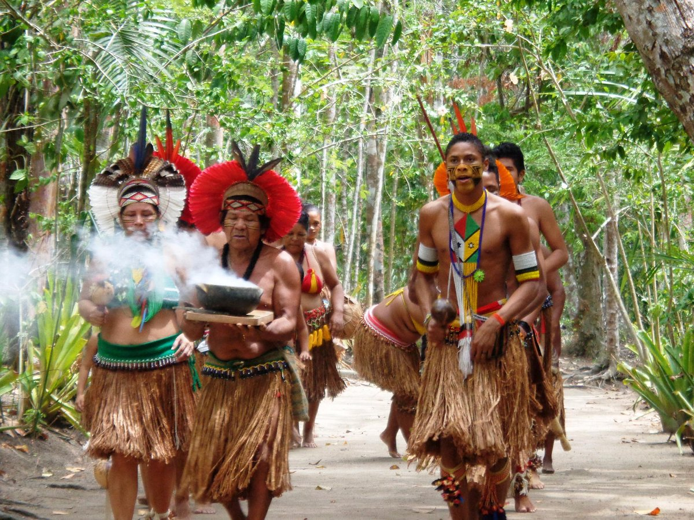
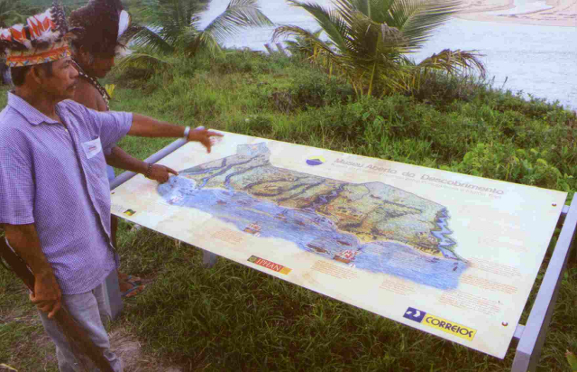

Os Pataxó
Os Pataxó é grupo indígena que vivem no extremo sul da Bahia e norte de Minas Gerais. Graças ao contanto com o não índios, eles foram muitas vezes obrigados a deixar seus costumes, mas hoje se esforçam para retomar as suas antigas práticas.
Disponíel em: https://www.tripadvisor.com.br/Attraction_Review-g303270-d2391289-Reviews-Reserva_Pataxo_da_Jaqueira-Porto_Seguro_State_of_Bahia.html
Figura que mostra homens e mulheres do povo Pataxó realizando um ritual.
Nome
O nome Pataxó significa "barulho das águas", pois "Pataxó é água da chuva batendo na terra, nas pedras, e indo embora para o rio e o mar" - Kanátyo Pataxó, Txopai é Itôhâ, 1997.
Língua
A língua pataxó faz parte do tronco Macro-Jê e da família Maxakalí. Em suas aldeias o português é a língua principal mesclado com algumas palavras da língua antiga deles. Embora, a língua não seja falada, recentemente eles têm se esforçado para retomar o uso da língua Patxohã - "Língua de Guerreiro".
Habitantes Pataxó
Não existe um número exato de habitantes dos pataxó no brasil ataualmente. No entanto, segundo Censo Demográfico de 2010 realizado pelo IBGE, existiam um total de 13.588 índios Pataxó neste mesmo ano.
Suas Terras
Os Pataxó vivem no extremo sul da Bahia, em 36 aldeias distribuídas em seis Terras Indígenas:
localizadas nos municípios de Santa Cruz Cabrália, Porto Seguro, Itamaraju e Prado.
No estado de Minas Gerais, eles vivem em sete comunidades:
estas quatro estão localizadas na Terra Indígena Fazenda Guarani, no município de Carmésia.
E as outras três:

Zé Guedes e filho examinam mapa da TI Pataxó reivindicada. Aldeia Cahy. Foto: E. Almeida, Maio, 2001.
Figura que mostra Zé Guedes, indígena Pataxó e seu filho, examinando o mapa da TI reivindicada.
Habitantes Pataxó
Não existe um número exato de habitantes guajajara no brasil, nem mesmo uma taxa certa de natalidade ou mortalidade deles. No entanto, segundo dados da Funai, existiam 13.100 em suas terras em 2000, sem contar os que moravam nas cidades.
Contanto com os Brancos
Ao longo da história do contanto com os colonizadores, os Pataxó foram obrigados a deixarem de lado grande parte de seus costumes. Além disso, em outros momentos, suas famílias eram totalmente desfeitas, pois os colonizadores roubavam os filhos homens para trabalharem e as filhas mulheres para ajudar nas casas das mulheres brancas.
Organização Social e Política
O número significativo de aldeias pataxós está relacionado com o processo de retomada se suas terras tradicionais que outrora foram roubadas ao longo da história.
A chefia das aldeias geralmente é masculina e recebe o nome de cacique e raramente prevalece mecanismos de sucessão na escolha desse líder.